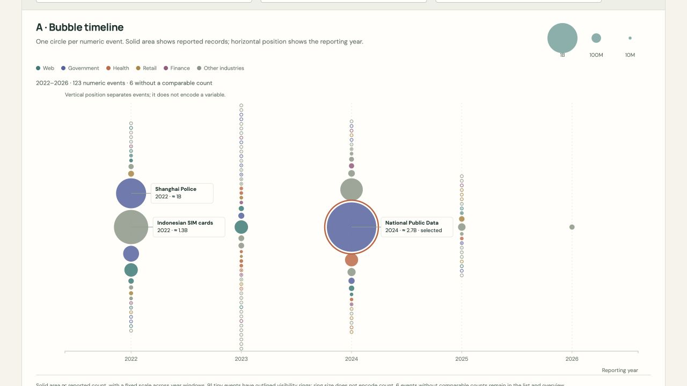
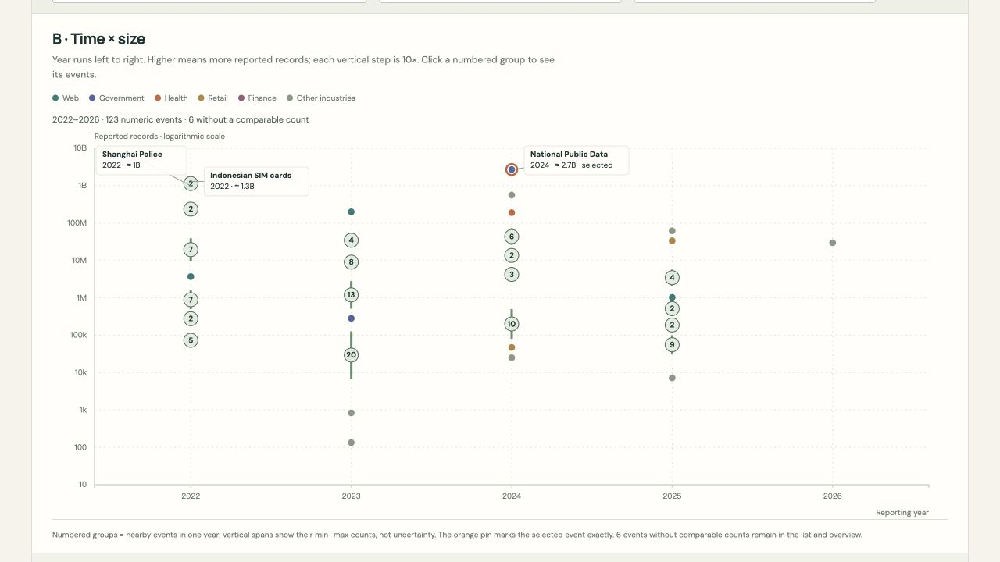

Visualization Critique and Redesign · Individual Project
Data Breaches in Context
See the history. Find an event. Understand its scale.
The same collection, two perspectives
Major reported breaches, over time
Loading source data…
A · Bubble timeline
On small screens, scroll the chart sideways. Year controls and the event list also work with a keyboard.
No events match this selection.
Keep the whole timeline in view
Drag across the overview to focus on a period, or choose years below. Bar height counts listed events.
Identify events
Names behind the marks
Compare specific events
Selected records on a shared baseline
An initial example compares National Public Data with Ticketmaster. Choose up to three numeric events.
Select an event above, then choose “Add to comparison”.
What these data can and cannot show
These are selected, reported events, not a census of data breaches. Category counts and reporting-year patterns cannot establish industry risk or worldwide incidence. Records can mean accounts, documents, images, and other source units, not unique people. Quantities have not all been independently verified.
Events without comparable counts remain in the overview and named list but have no numeric position or proportional bubble. Tiny outlined rings in A are visibility targets; only solid circle area represents record count. In B, numbered groups summarize crowded events, with a vertical line showing the range of their reported counts.
Source: Information is Beautiful · Original spreadsheet · External JSON · Data audit · Snapshot: September 25, 2026
Original and redesigned views
Preserve the overview, improve the inspection



Design argument
The purpose stays.
The reading improves.
Project report · 745 words (body, excluding headings and references)
One-minute presentation ↗Purpose, audience, and data
I interpret Information Is Beautiful’s “World’s Biggest Data Breaches & Hacks” as a public overview of major reported breaches: readers notice their magnitude, locate familiar organizations, and investigate individual stories. This is an inference from its design, not an explicit author statement. My redesign preserves that overview while making dense periods and selected events easier to inspect and compare.
Both D3 alternatives load the same external JSON derived from the original’s linked spreadsheet. The September 25, 2026 snapshot retains 539 events across reporting years 2004–2026, including entries below the original graphic’s stated 30,000-record threshold. There are 499 usable numeric counts and 40 unknown, unresolved, or incompatible-unit entries. Year means when the story broke, not necessarily when the breach happened. Reported records are not unique people.
The excluded group contains 11 explicitly unknown counts, 28 possible placeholder values lacking corroboration, and one count of systems rather than records. Exclusion is conservative: an unresolved value is not proof that the real quantity is unknown.
Two strengths worth preserving
First, the original’s chronology and contrasting bubble sizes give a striking impression of time and magnitude. Large events attract attention before readers study exact values. Second, recognizable organization names lead into stories and source links, connecting an abstract collection to specific incidents. These strengths support discovery as well as numerical reading. The original already has search and filters; adding them alone would not establish an improvement. Figure 1 is an excerpt of the original.
Three limitations
First, large bubbles dominate space, making smaller marks and nearby labels compete for attention. A readable overview becomes harder to maintain in dense regions.
Second, circle areas lack a common baseline. Similar quantities are difficult to distinguish, while extreme values make smaller events visually inconspicuous. A dramatic impression of scale does not guarantee accurate comparison.
Third, events from an industry or cause are dispersed through the chronological display. Comparing selected cases requires finding their marks and retaining their values mentally. Filtering reduces the collection, but does not itself provide a common comparison baseline.
Design decisions
First, both alternatives preserve chronology and provide a shared overview of source events by reporting year. Brushing a period, or entering its start and end years, focuses the main view while the full timeline remains visible. This separates context from detail without replacing the collection with a top-ten ranking. Search and category filters refine the same focus.
Second, Alternative A preserves circles whose solid areas represent numeric counts. Vertical packing reduces overlap; vertical position has no data meaning. Outlined visibility rings make tiny events selectable without enlarging their encoded solid areas. This retains the original’s visual emphasis on magnitude, while acknowledging that small values still need labels or details.
Third, Alternative B plots exact reporting year against count on a logarithmic vertical axis. Equal vertical steps represent equal ratios, allowing small and large events to coexist. Isolated events appear at their exact values. Dense, same-year events become numbered group badges with vertical spans showing their minimum and maximum counts. Badge numbers count events; badge midpoints are not individual measurements. Clicking reveals members and exact values in the list; a selected event receives an exact-position pin. This grouping reduces overlap, while logarithmic spacing supports ratio reading rather than absolute differences.
Fourth, prominent labels identify major and selected events, while a named result list provides access to every matching case. Selecting an event reveals its value, story, and available sources. Filters and selected identities persist when switching alternatives, enabling comparison of the representations using the same evidence.
Fifth, readers can choose up to three numeric events for a secondary, zero-baseline linear bar comparison with printed values. This addresses the area-comparison problem without sacrificing the main overview. Entries with unusable counts remain accessible separately rather than receiving invented numeric positions. Short transitions help connect states; no autoplay is required to understand the chart.
Before, after, and limitations
Figures 2 and 3 show two responses to Figure 1’s tradeoffs. Alternative A preserves visual impact; Alternative B makes time and magnitude coordinates more explicit. Shared focus controls and comparison bars support inspection in either view. Neither alternative is universally better.
Packing increases display space, visibility rings add clutter, and logarithmic axes require explanation. Grouping hides individual positions until selection, while selective labels make the result list important. Numeric source quantities can describe accounts, documents, or images, so comparisons are imperfect. Source values have not all been independently verified, and this curated collection cannot establish worldwide breach incidence or industry risk. No user study was conducted; the claimed benefits are design arguments, not measured performance improvements.
Sources and implementation
- Information Is Beautiful. World’s Biggest Data Breaches & Hacks. Design and concept: David McCandless; code: Tom Evans. Accessed September 25, 2026. Original visualization excerpt shown in Figure 1.
- Information Is Beautiful. World’s Biggest Data Breaches source spreadsheet. Accessed September 25, 2026. Includes event descriptions and links to underlying reports.
- Archived source CSV, downloaded September 25, 2026. See the data audit for cleaning decisions and the external JSON loaded by both D3 alternatives.